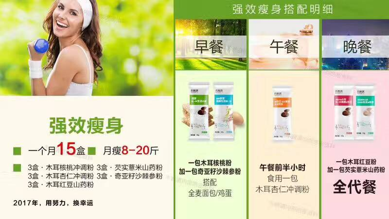
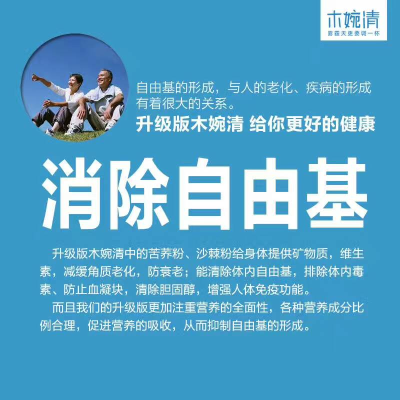
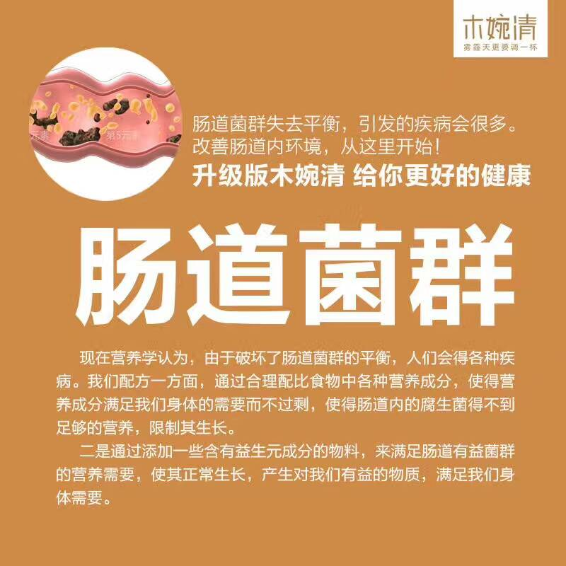
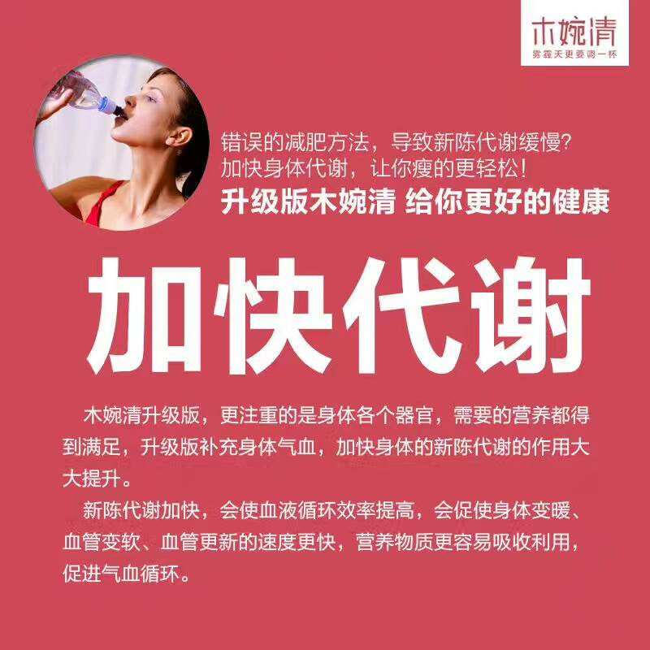
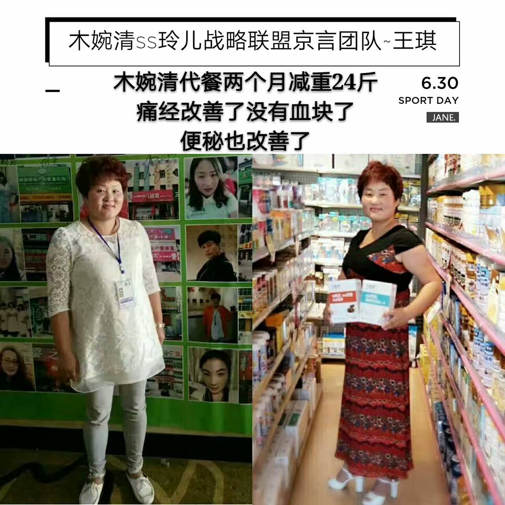
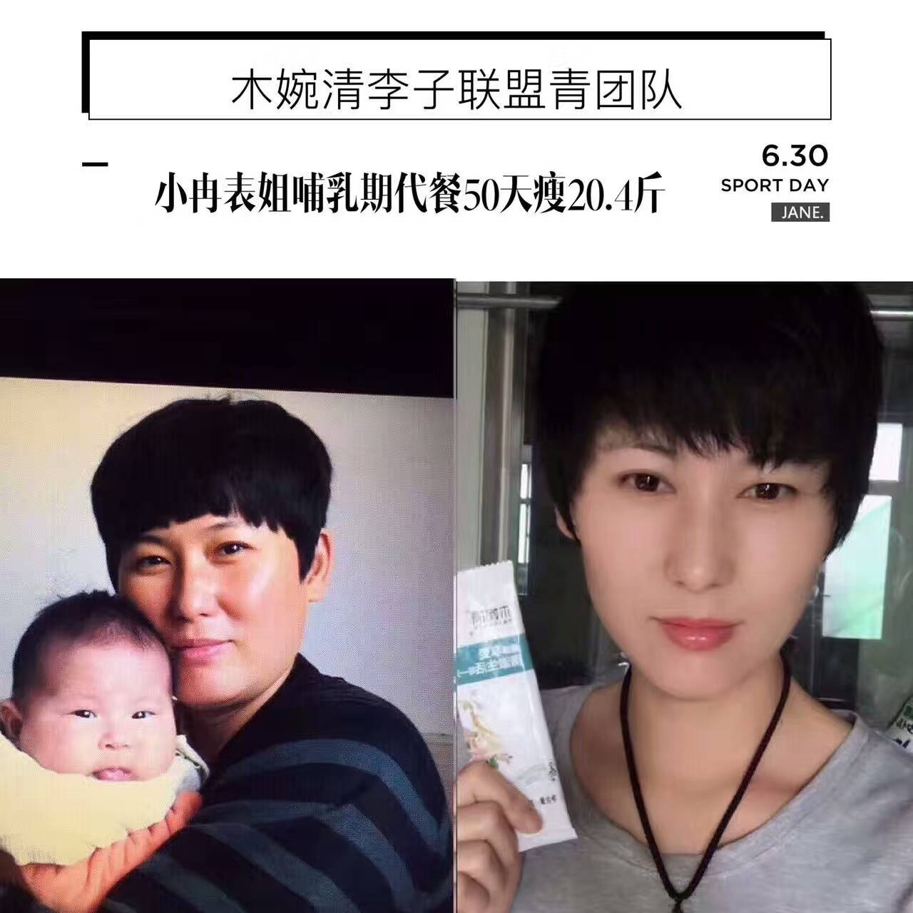
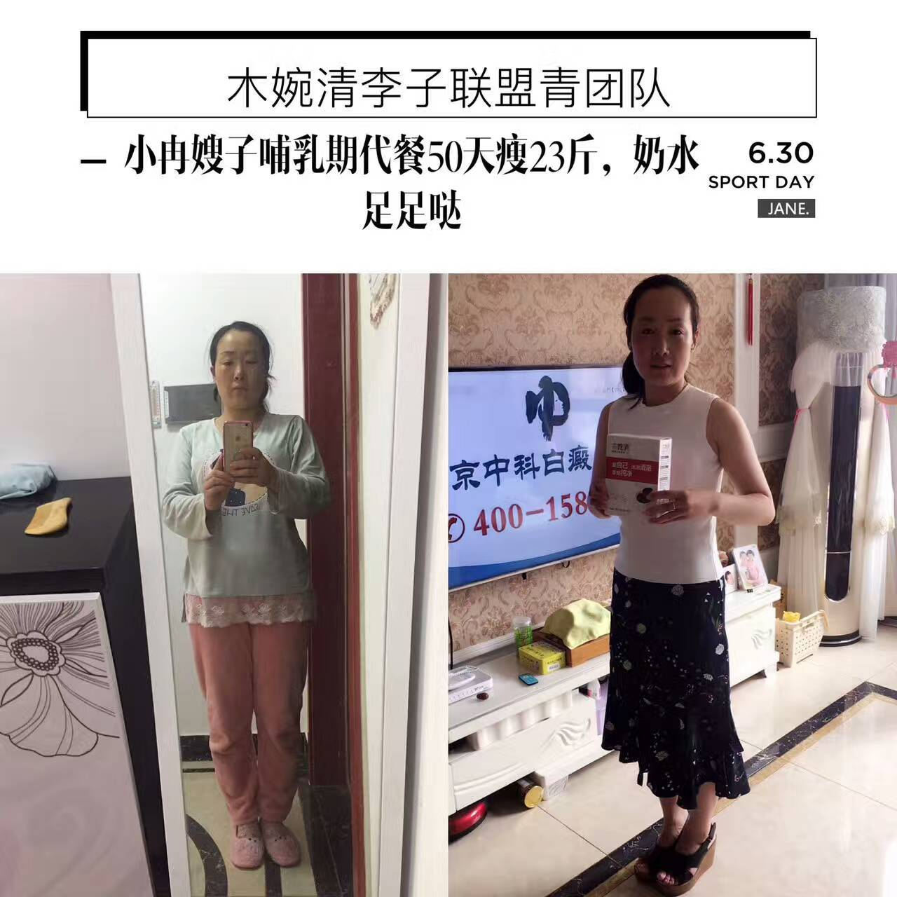
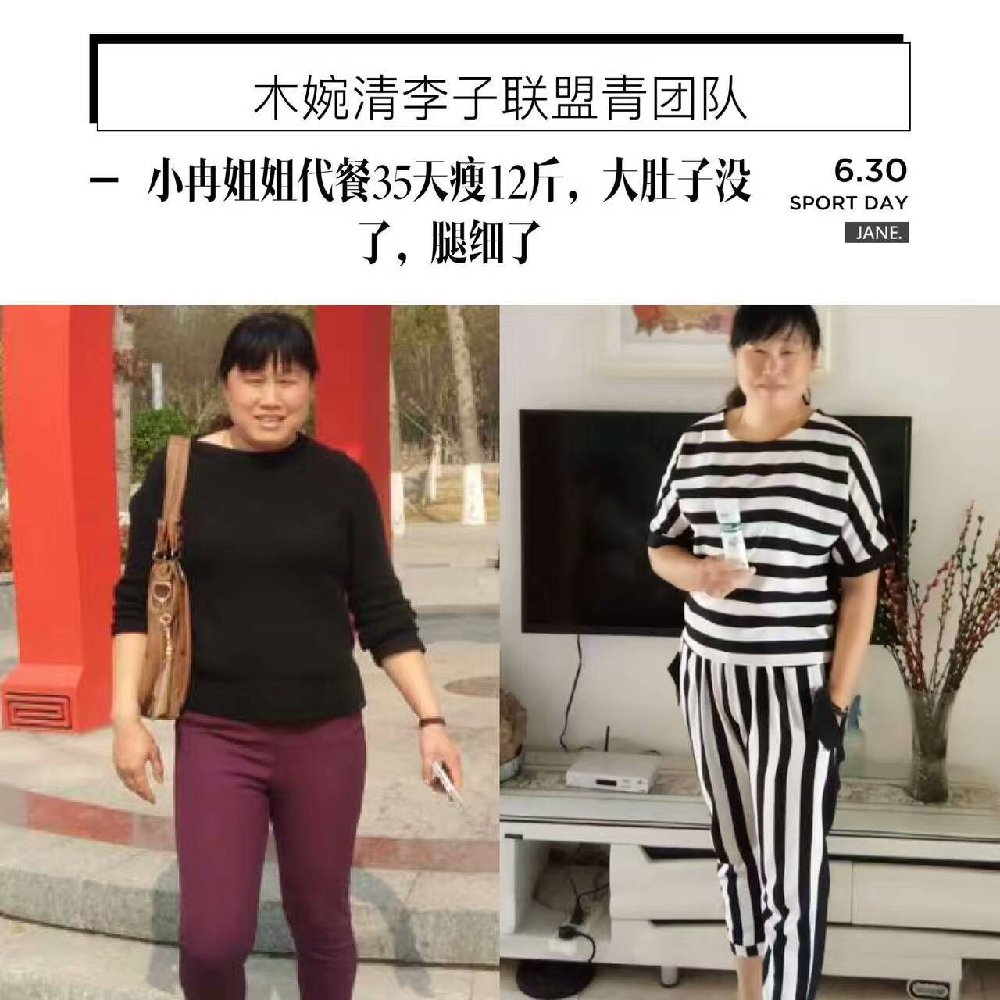

【木婉清是什么呢❓】
木婉清类属于食品。
是一款功效型的食疗产品。
它由30多种食材超微粉碎而成。
可以抑制脂肪合成，可以分解脂肪。
可以阻断淀粉吸收，可以保护心脑血管。
可以提高免疫力，可以调节内分泌。
零添加，无防腐，中国人民保险承保。
比婴儿奶粉的制作标准都高的一款产品。

【木婉清调气血、补脑、排毒、调脾胃、暖宫调理月经、调理便秘】
扫一扫二维码 订购

【木婉清 功效】
最近很多朋友问，木婉清只能减肥吗？
当然不是哦！
如果调气血，可以拿【3】盒奇亚籽沙棘参粉喝一个月。
如果补脑益智，可以拿【3】盒木耳核桃粉喝一个月。
如果想皮肤好想排毒，可以拿【3】盒木耳杏仁粉喝一个月。
如果脾胃虚弱，可以拿【3】盒芡实薏米山药粉喝一个月。
如果想暖宫调理月经，去水肿下奶，可以拿【3】盒木耳红豆粉喝一个月。
如果减肥，5种共20盒喝40天瘦8到20斤！！

【每天一杯木婉清 湿气去无踪】
为什么现代人容易湿气重。
1⃣吃了过多的油腻食物，消化不了，堆积成湿，痰湿会堆积于身，导致身体不畅。比如常说的吃肉生痰。
2⃣消化、代谢能力不足，吃一点就易腻，体内毒素排泄不正常，凝结成湿气。
3⃣环境、季节因素的影响，比如冬有暖气，夏有空调，雾霾、回潮天很容易湿气缠身，导致身体乏力。
【木婉清调气血、补脑、排毒、调脾胃、暖宫调理月经、调理便秘】
扫一扫二维码 订购
【案例1 --木婉清—女性调理身体好帮手！】
痛经、便秘,女性最常见且苦恼的问题
餐前来杯木婉清，帮你轻松搞定

【案例2 --木婉清—瘦身家庭篇之哺乳期】
小冉表姐代餐50天瘦20.4斤
小冉嫂子代餐50天瘦23斤
结伴瘦身，都不影响宝宝口粮哦！


【案例3 --木婉清—瘦身家庭篇之小冉姐姐】
代餐35天瘦12斤
餐前来一杯，瘦腿瘦肚子

【木婉清调气血、补脑、排毒、调脾胃、暖宫调理月经、调理便秘】
扫一扫二维码 订购
零添加，无防腐 加微信 YY18710174518 订购